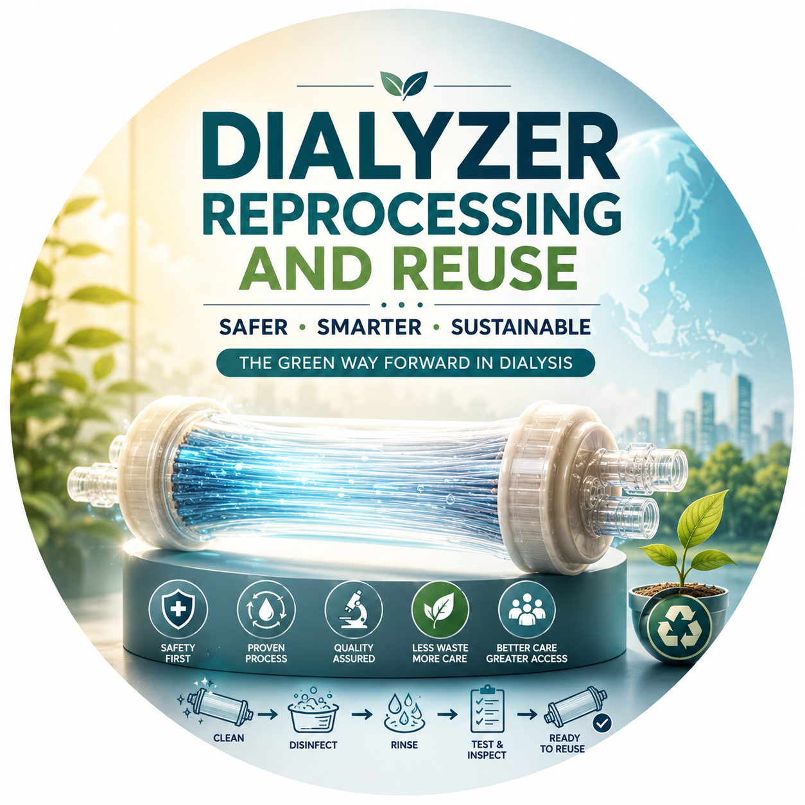
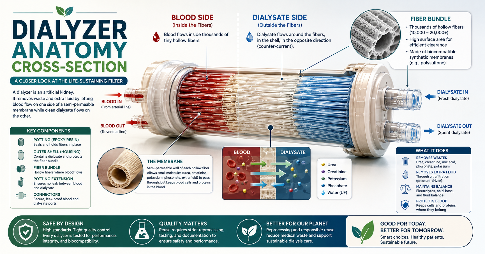
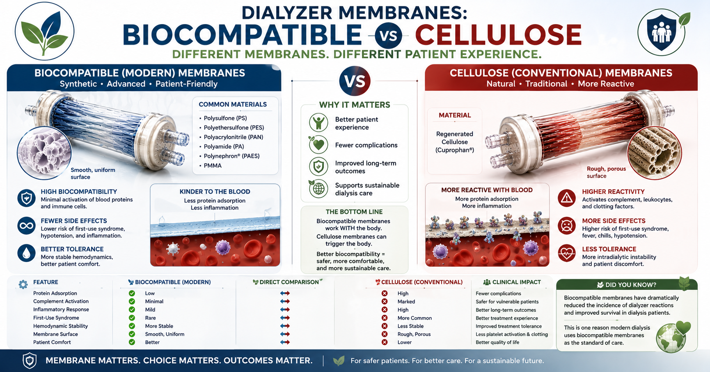
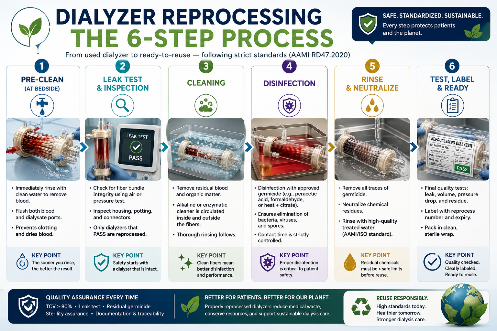
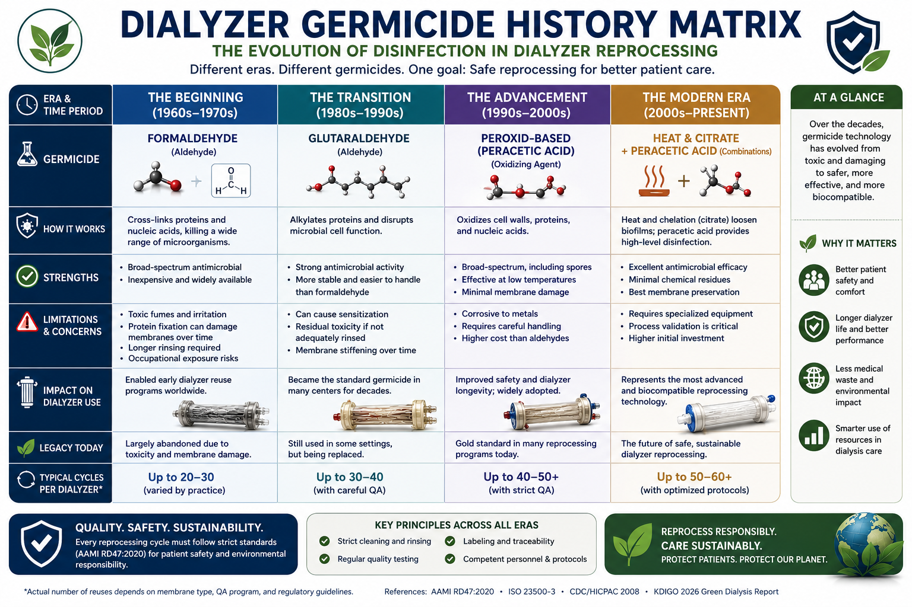
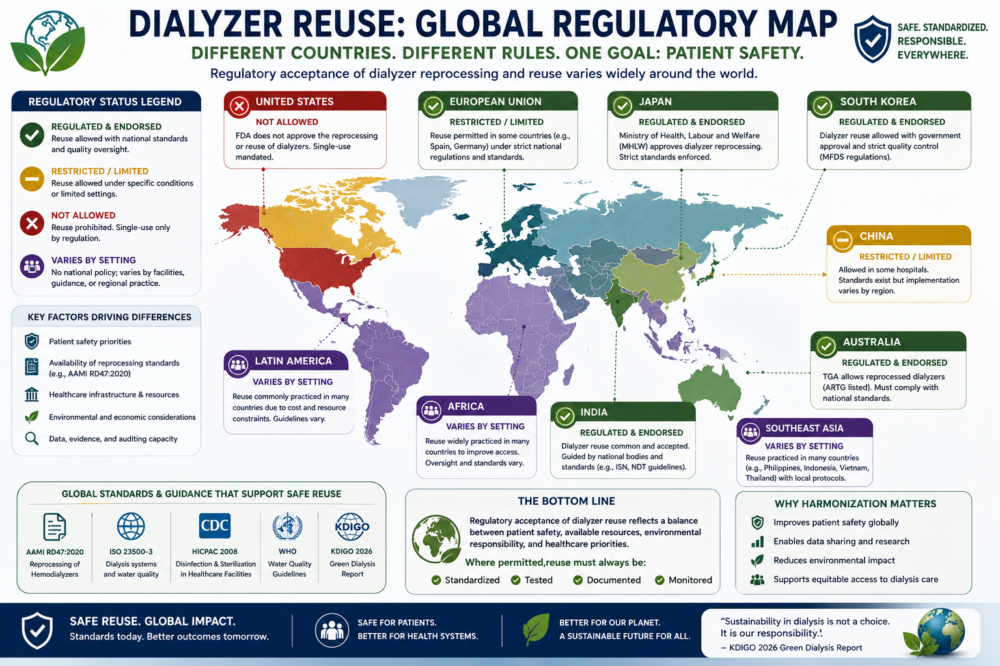
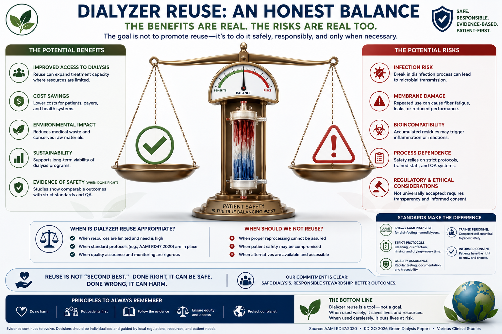
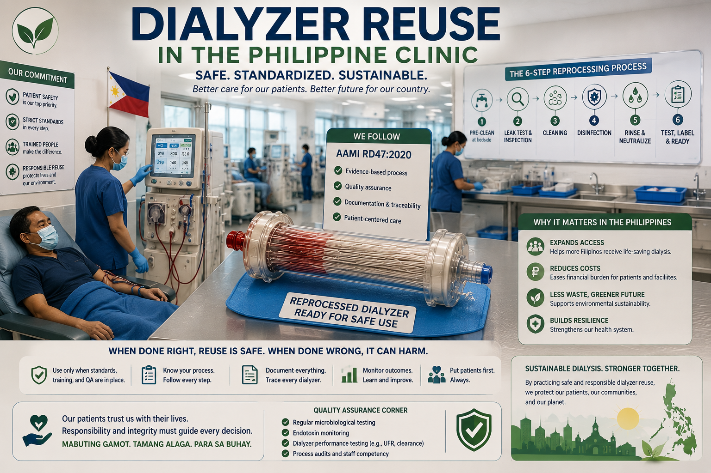
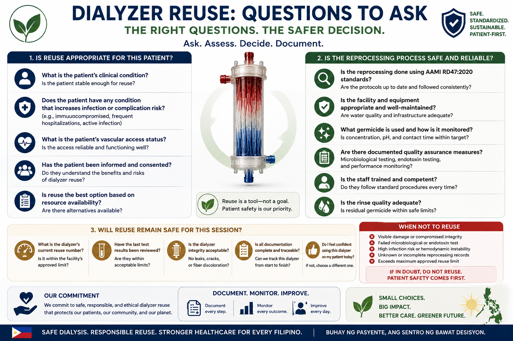

Dialyzer Reuse · A Companion to Green Nephrology 2026
Reprocessing dialyzers in modern times — the quiet renaissance of an old practice.
Dialyzer reuse — cleaning, testing, disinfecting and re-using a hemodialysis filter on the same patient — was the textbook example of a practice in terminal decline. Then climate, cost, and access reframed the question. This is the deep-dive companion to the Green Nephrology 2026 guide: what reprocessing actually is, why the rich world walked away, and why KDIGO 2026 has put reuse back on the table — without lowering safety standards.
PublishedNailathalaGipatikPepalwal:Read timeOras ng pagbasaOras sa pagbasaOras ning pamamasa:
Reuse hierarchy tier Tier 2 of 5 (Reuse)
Main germicide today Peracetic acid

Reuse never died in the developing world. What is new is that high-income nephrology is being forced to reconsider it as a sustainability lever — even as the infection and quality-control cautions remain fully intact.
Hook · The Question Patients Actually Ask
"Is my filter being reused?"
Patients sometimes whisper this to nurses, half-afraid of the answer. So let us start there, plainly.
🛡️
The straight answer
If your unit reprocesses dialyzers, your filter is strictly single-patient — labeled with your name and a reuse count, stored separately, cleaned and tested before every treatment. Your filter is never used on someone else.
For decades, "reuse" was treated as a fading practice — something the rich world was steadily retiring. Then the climate conversation arrived, and a question everyone thought was closed got a new hearing. This guide walks through what reprocessing actually is, why most high-income countries walked away, and why KDIGO 2026 has cautiously put it back on the table as a sustainability and access lever — without lowering safety.
The Membrane
What a dialyzer actually does.

Inside a dialyzer — hollow fibers, semipermeable membrane, three ways your blood gets cleaner.
You cannot judge "reprocessing" without first picturing what is being reprocessed. A dialyzer is the artificial kidney of hemodialysis — a clear plastic cylinder packed with thousands of microscopic hollow fibers. Your blood flows inside the fibers; a clean salt solution called dialysate flows around them in the opposite direction. The fibers' walls are semipermeable — small toxins cross, blood cells and proteins do not.
Diffusion
Urea, creatinine, and potassium move from high concentration (your blood) to low concentration (the dialysate) across the membrane. This is most of the "cleaning."
Ultrafiltration
Pressure pushes excess water out of the blood across the membrane — this is how dialysis removes the fluid you could not pass as urine.
Convection
Water dragged across the membrane carries middle-sized toxins with it. Used heavily in hemodiafiltration; minor in standard HD.
🧬
Why the membrane material matters for the reuse story
Older cellulose membranes triggered an inflammatory reaction on first contact with blood — the so-called "first-use syndrome." Reusing a dialyzer dampened that reaction. Modern biocompatible synthetic membranes (polysulfone, polyethersulfone) are designed to avoid the reaction from the very first treatment — quietly removing one of the original medical arguments for reuse and leaving cost and sustainability as the live ones.

Old vs modern membrane — the technical change that quietly weakened the original case for reuse.
Step by Step
What "reprocessing" actually means.
Reprocessing is not simply washing and reusing. It is a documented chain of checks that the dialyzer must pass each time before it ever touches your blood again. Skip any step and the dialyzer is discarded.
Reprocessing is not simply washing and reusing. It is a documented chain of checks that the dialyzer must pass each time before it ever touches your blood again. Skip any step and the dialyzer is discarded.

Six documented checks; any failure halts the chain.
1
Reverse rinse & cleaning
The blood and dialysate sides are flushed in reverse to clear residual blood, clots, and protein debris from the fibers.
2
Performance test — Total Cell Volume (TCV)
The volume inside the fiber bundle is measured. It must be ≥ 80% of the original. Below that, too many fibers have clotted and the dialyzer is retired — it can no longer deliver adequate clearance.
3
Pressure / leak (integrity) test
Pressurized air or fluid checks that no fibers have ruptured. A single leak between the blood and dialysate sides would let dialysate enter the blood — automatic failure, automatic discard.
4
Disinfection with a germicide
The dialyzer is filled and dwelled with a chemical disinfectant — most commonly peracetic acid today. Contact time and concentration are specified by the germicide protocol.
5
Labeling & storage
The dialyzer is labeled with your name, ID, and reuse count, then stored separately. Single-patient use is enforced physically and by record.
6
Pre-use rinse & residual germicide test
Before your next treatment, the dialyzer is rinsed and a residual germicide test confirms the chemical is below the safe limit. Only then does it connect to you.
📋
The standard behind these steps
All of this is governed in detail by ANSI/AAMI RD47:2020 — Reprocessing of hemodialyzers, and tightly linked to water-quality standards (ISO 23500-3) for the product water used to rinse the dialyzer. A unit that practices reuse without these protocols is not "doing reuse" — it is doing something else, and it is unsafe.
The label — the safety system.
Every reprocessed dialyzer carries a label that is, in effect, its chain of custody. The label answers four questions before the dialyzer is ever connected to a patient: Whose is this? How many times has it been used? Is it still safe? Did someone sign for it? If any of those answers is missing or illegible, the dialyzer is discarded — not "tried."
HD DIALYZER REUSE LABEL · SAME-PATIENT ONLY ⚕
① Patient identification
NameDELA CRUZ, JUAN R.
Chart #PSN-2025-04812DOB14-Mar-1965
② Dialyzer
ModelFresenius FX80 (lot 4892-A)
MembraneHelixone · 1.8 m² · high-flux
First use12-Jun-2026 (new — no reprocessing)
CurrentUse # 5 = Reuse # 4 of 9
Ideal ≤ 5 total uses · PhilHealth max 10 ◐
③ Performance
Baseline TCV115 mL
Current TCV101 mL → 88 %✓ PASS
Pressure leak—✓ PASS
④ Germicide
AgentPeracetic acid (Renalin 100)
Concentration1.0 %
Filled at18-Jun-2026 09:42OperatorRT-MEL
Min dwell11 h → earliest re-use 20:42
⑤ Pre-use check (next session, before connection)
☐ Residual germicide test negative
☐ Patient name + chart # verified (two-source match)
Patient identification. Full legal name + permanent chart number. Two independent identifiers are required by AAMI RD47:2020 §5.4. The dialyzer is single-patient — never moved between patients.
Dialyzer. Model, lot, membrane material, surface area, and flux classification. "First use" is the date the dialyzer was opened from its sterile packaging — at that point it is factory-new and has not been reprocessed. From the next session onward each reprocessing increments Reuse # by one (= Use # by one). PhilHealth caps reuse at 9 (i.e. 10 total uses per dialyzer); reputable Philippine units aim for ≤ 5 total uses because membrane performance and first-use-syndrome rates stay best in that range. Between Use # 6 and Use # 10 the dialyzer continues only while TCV stays ≥ 80 % of baseline; any failure → discard before the cap is reached.
Performance. Baseline Total Cell Volume (TCV) is recorded on the first reprocessing. Each subsequent cycle must show TCV ≥ 80 % of baselineand an intact pressure leak test. Either failing → discard.
Germicide. Name, concentration, fill date/time, the reprocessor's operator initials, and the minimum dwell time before the dialyzer may be reused. Peracetic-acid systems typically need 11 h dwell; the earliest legitimate next-use time is filled in on the label so the floor cannot connect it early.
Pre-use check. Before the dialyzer is connected at the next session, three checks must be signed off on the label itself: a negative residual-germicide test, a two-source patient-identity match, and a repeat pressure-leak test. No signature → the dialyzer does not get used.
Status & storage. The dialyzer is stored in a labeled, dedicated rack — never on a shared shelf with other patients' filters.
Sticker, or written on the dialyzer itself.
How this label appears in real life depends on the unit. Two implementations are accepted; the data is the same, only the medium changes.
Pre-printed sticker
The gold standard
An adhesive label is applied to the clear plastic header of the dialyzer at the moment of first reprocessing. The reprocessing technician fills in every numbered field in pen, signs the pre-use checkboxes at chairside, and the label is replaced each cycle (or peeled and over-stamped). This is the form shown above and is what AAMI RD47:2020 audits expect to find.
Hand-written on the body
The floor reality
When a sticker is impractical — supply runs out, the cap is too small, the adhesive keeps peeling in the reprocessor's water bath — Philippine technicians write directly on the clear plastic dialyzer body with an alcohol-resistant permanent marker (Sharpie Industrial, Pilot Permanent, or equivalent). The minimum information that must remain legible on every dialyzer between reprocessings:
DELA CRUZ, JR. PSN-2025-04812
#5 / 10 TCV 101
PAA 18-Jun 09:42
Six fields, hand-written, refreshed at every reprocessing. The full audit-compliant data lives in the unit's reprocessing logbook; the body marker is the chairside cue.
⚠
The chairside rule — sticker or marker, identical
Whichever method your unit uses, the rule before the bloodlines are connected is the same: two independent identifiers (name + chart number) match the patient at the chair — every session, no exceptions. If the writing is smudged, the sticker is peeling, or any field is missing, the dialyzer is discarded, not reused.
📋
PhilHealth rule, Philippine practice
Nine reuses is a ceiling, not a target. Most reputable units in Metro Manila and the regional centers aim for 4–5 total uses and only push toward 9 if dialyzer supply is constrained or in single-patient home-HD contexts. Every cycle past five is a quality-of-clearance trade-off that must be justified by passing TCV and leak tests at every reprocessing.
The Disinfectants
The germicides — then and now.
Three chemical disinfectants and one physical method dominate the history of dialyzer reprocessing. The story is one of steady modernization, mostly for worker and patient safety.

Formaldehyde (1983) → peracetic acid (today) — the modernization in one chart.
Agent
How it works
Strengths
Trade-offs
Peracetic acid (e.g., Renalin)
Strong oxidizer; broad-spectrum kill
Breaks down to water, oxygen, and acetic acid; low residual toxicity; the dominant agent worldwide since the mid-1980s
Corrosive to some components; needs careful handling; residual test required pre-use
Formaldehyde
Protein cross-linking; cidal at high concentration
Cheap; long historical track record
Known occupational carcinogen; pungent; rare anti-N-like antibody reactions; use plunged from ~94% (1983) to ~20% (2002)
Glutaraldehyde
Protein cross-linking
Effective alternative to formaldehyde
Irritant; sensitization in staff; largely a niche choice today
Heat + citric acid
Thermal kill plus mild organic acid
No toxic chemical residue; appealing on safety grounds
Energy-intensive; equipment-specific; less broadly adopted
Why peracetic acid won
Broad-spectrum action against bacteria, viruses, and spores; a residue profile (water, oxygen, acetic acid) that is far gentler than formaldehyde; and lower long-term risk for the technicians who handle it day after day.
What is coming next
Newer automated reprocessing systems (for example ClearFlux) aim for a safer chemical profile, tighter automation, and a smaller water/energy footprint per cycle — a key piece of the modern "can reuse be greener and safer?" question.
✅
Patient takeaway
Whatever germicide your unit uses, the rule is the same: a residual test must confirm it is rinsed out before reuse. You are entitled to ask which agent is used and how the rinse is verified.
The First Half of the Story
Why the rich world walked away.
For two decades, dialyzer reuse was simply how most US units worked. At its peak in the 1980s–90s it was near-universal; by 2005 about 40% of US units were still reusing. Then it reversed.

Where in the world reuse is allowed — and where the Philippines sits.
Infection-risk signal
Bloodstream infections were higher in some reuse populations. Even where the absolute risk was modest, the signal was hard to ignore once cheaper alternatives existed.
The medical case eroded
Modern biocompatible synthetic membranes removed the "first-use syndrome" argument that had once favored reuse. Without that, reuse was justified mainly on cost.
QA gap
Facility-level reprocessing — done well — is still not held to the same regulatory rigor as FDA-cleared original manufacturing. That gap is real and weighed heavily in policy decisions.
🚫
The hard line abroad
Dialyzer reuse is now prohibited in Japan, Australia, and most European Union states. In the United States, it has fallen from near-universal to a clear minority practice. The reasoning everywhere was similar: with cheap, biocompatible single-use filters available, the infection and quality-control risks no longer looked worth the savings.
⚠️
The honest framing
The retreat was rational in high-income systems with reliable supply chains, cheap single-use dialyzers, and tight regulators. It does not automatically mean reuse is wrong everywhere — only that those countries had a cheaper, lower-risk alternative readily available.
The Centerpiece
The green renaissance — why reuse is back on the table.
The argument for reconsidering reuse is not nostalgia. It is climate.
~5.2%
Of global greenhouse-gas emissions come from health care (KDIGO 2026)
~400–500 L
Water per hemodialysis session, including RO reject water
Tier 2
"Reuse" is the second step of the 5-tier waste hierarchy — only "Prevent" outranks it
1 deep-dive
KDIGO 2026 explicitly endorses reuse as a pragmatic LMIC strategy — done to standard
⚖️
The KDIGO 2026 reframe
Value = Patient Outcomes ÷ (Environmental + Social + Financial costs). Sustainability is no longer separate from quality — it is a quality metric. Inside that equation, anything that reduces the environmental cost without harming outcomes raises value. Reuse, done to standard, is one of those levers.
Reuse is tier 2 of 5 — useful, but only Prevent outranks it.
1. Prevent
The most powerful intervention is the disposable that is never produced — fewer treatments, right-sized prescriptions, incremental dialysis where appropriate.
2. Reuse (this is where dialyzer reprocessing sits)
Each reuse cycle is one fewer single-use dialyzer manufactured, shipped, and incinerated. In high-volume units the saving is substantial.
3. Recycle
Recovering plastics from blood lines and packaging where local infrastructure permits.
4. Recover
Energy recovery from waste — last-line, low-yield.
5. Dispose
Safe landfill or incineration — what is left after the four steps above have done their work.
🌱
And the explicit KDIGO endorsement
The KDIGO 2026 Green Dialysis report explicitly identifies dialyzer reuse as a pragmatic cost-containment and access-expansion strategy in lower- and middle-income countries — provided it is delivered to standard. That is a deliberate, careful endorsement, not a blanket recommendation.
For more on the broader framework — the triple-bottom-line value equation, water stewardship, plastic waste, and what changes inside the dialysis unit — see the parent Green Nephrology 2026 guide.
The Counter-Evidence
But is the green case airtight? The honest accounting.
The renaissance can be oversold. The same KDIGO 2026 framing that supports it also insists the case be made honestly. Here is the other side.

Real saving, real footprint of its own.
The mortality evidence is old
A 2012 systematic review found no mortality difference between reuse and single-use — reassuring, but it studied largely outdated membranes. Its applicability to modern reuse with modern dialyzers is limited.
Signals of harm exist
Some studies suggest higher infection and hospitalization rates with repeated reuse, and measurable decline in dialyzer performance with each cycle. The pattern is not uniform, but it is not nothing.
Reprocessing has its own footprint
Each reprocessing cycle uses water for rinsing, electricity for the cycle, and chemicals that must be manufactured, shipped, and disposed of. The green "win" is real, but it is not free.
🧮
The honest bottom line
The environmental win from reuse is conditional — it is strongest where single-use waste dominates and reprocessing is run efficiently on relatively clean water and energy. It is weakest where water is scarce, energy is dirty, or reprocessing is sloppy. Reuse is a tool, not a virtue in itself — it must be done to standard, and never used as cover for cutting corners.
In the Philippines
What this means here — and what to ask your unit.
The Philippines sits on the side of the global split where reuse remains a real option. In many cost-constrained units, it expands access to dialysis that would otherwise be out of reach. That is a genuine benefit. The safeguard is non-negotiable: if reuse is practiced, it must follow standardized disinfection and safety protocols — never as a shortcut to lower costs at the expense of patient safety.

Single-patient, labeled, logged — the visible proof inside a Philippine unit.
Six questions to ask your dialysis unit
Does this unit reuse dialyzers, or is it single-use only?
If reuse — which germicide do you use, and how long is the contact time?
What is the maximum number of reuses per dialyzer in this unit?
How is the residual germicide tested before each treatment?
May I see my dialyzer's label and reuse log?
What is your policy when a dialyzer fails TCV or the leak test?

Screenshot and bring to your next appointment.
🚩
Red-flag symptoms to report immediately
Fever or chills during or shortly after a treatment
Shaking, drop in blood pressure, or a sense of "wrongness" within minutes of starting dialysis
Unusual taste, headache, or burning sensation at the start of a session
Any new infection at the access site coinciding with treatment
💬
The right way to use this guide
Bring this section to your nephrologist as a conversation, not as an accusation. The point is not to fear dialysis — modern reuse, done to AAMI RD47 standards, has decades of safe practice behind it. The point is to know what good practice looks like and to confirm your unit is delivering it.
FAQ
Common questions, plain answers.
Is reusing my dialyzer safe?
Under strict standards (AAMI RD47), reuse has been used safely for decades. Single-use is now the preferred default in well-resourced settings on infection-risk grounds, but reuse done to standard is not a "lesser" treatment — it is a tightly controlled, monitored process.
Is my filter ever used on another patient?
No. Reprocessing is strictly single-patient. Your dialyzer is labeled with your name and a reuse count, and stored separately. Cross-patient use would be a safety violation, not a reuse policy.
I heard reuse is making a comeback — why?
Climate. Single-use dialysis creates large amounts of plastic and carbon, so KDIGO's 2026 Green Dialysis work has put reuse back on the table as a sustainability and access measure — without lowering safety standards.
Is reuse actually better for the environment?
Often, yes — because it cuts plastic and dialyzer waste. But reprocessing itself uses water, energy, and chemicals, so the net benefit depends on how efficiently it is done and on the local water and electricity mix.
What chemical disinfects a reused dialyzer?
Most commonly peracetic acid today (for example, Renalin). It is rinsed out, and a residual germicide test confirms it is below the safe limit before your next treatment.
Why did countries like Japan and Australia ban it?
They judged that with cheap, biocompatible single-use filters, the infection and quality-control risks of in-facility reprocessing outweighed the savings. Most EU states have made the same call.
How many times can a dialyzer be reused?
There is no single global number. Each reuse must pass the TCV ≥ 80% performance test and the integrity/leak test; the moment it fails either, the dialyzer is retired. Many units cap the count administratively as well.
If reuse is allowed, can I still ask for single-use?
You can ask. Whether it is provided depends on your unit's protocol and the cost structure of your care. The right approach is an open conversation with your nephrologist about your concerns and your options.
Clinical / Technical Appendix
For clinicians and trainees.
This appendix anchors the patient-facing sections above in the KDIGO 2026 framework, the regulatory split, the germicide comparison, and the QA metrics that make reprocessing defensible — or not.
A. Where reuse sits in the KDIGO 2026 framework
Reuse is a tier-2 intervention on the five-step waste hierarchy (Prevent → Reuse → Recycle → Recover → Dispose). Useful, but well below prevention, incremental dialysis, and right-sized prescribing in environmental impact. The same triple-bottom-line value equation from the parent Green Nephrology guide applies: Value = Patient Outcomes ÷ (Environmental + Social + Financial costs). Reuse moves the denominator down only if outcomes hold; that is why KDIGO's endorsement is explicitly conditional on standardized practice.
ANSI/AAMI RD47:2020 — Reprocessing of hemodialyzers (US/international reference standard).
ISO 23500 series — Quality of dialysis fluids and water (the substrate of every rinse and dwell).
CDC/HICPAC Guideline for Disinfection and Sterilization (2008) — germicide handling and residual-toxicity framework.
Facility-level reprocessing manuals — must operationalize the above into per-cycle SOPs and audit trails.
D. Germicide modalities compared
Agent
Mechanism
Efficacy
Residual / monitoring
Peracetic acid (Renalin family)
Strong oxidizer
Broad-spectrum (bacteria, viruses, spores)
Breaks down to H₂O / O₂ / acetic acid; residual test pre-use
Formaldehyde
Protein cross-linking
Effective; long history
Carcinogen; strict residual + occupational exposure limits; usage fell from ~94% (1983) to ~20% (2002)
Glutaraldehyde
Protein cross-linking
Effective
Irritant; sensitization risk; niche use today
Heat + citric acid
Thermal + mild organic acid
Effective on supported devices
No toxic chemical residue; energy-intensive; equipment-specific
E. Quality-assurance metrics
Total Cell Volume (TCV)
Fiber-bundle volume must remain ≥ 80% of original — a surrogate for preserved clearance surface area. Below threshold → retire.
Membrane integrity
Pressure or air-leak testing every cycle. A failed leak test signals fiber rupture and mandates discard — no exceptions.
Residual germicide
Per-treatment rinse test must fall below the validated safe limit for the specific agent. Documented per cycle.
Labeling & traceability
Patient identifier, reuse number, date — single-patient enforced physically and by record.
Water quality
ISO 23500-3 limits for product water and dialysis fluid. Without compliant water, nothing else in the chain is defensible.
Process audit
Periodic review of failure rates, germicide-test pass rates, and per-cycle documentation. Trends — not single events — drive practice change.
F. The physiology argument, restated
Historically, part of the pro-reuse case rested on first-use syndrome with bioincompatible cellulosic membranes — reusing a dialyzer blunted complement activation on subsequent uses, so a "broken-in" filter caused fewer hypersensitivity reactions than a fresh one. Modern synthetic biocompatible membranes (polysulfone, polyethersulfone) largely eliminate this reaction on first use, removing the immunologic rationale and leaving cost and sustainability as the principal live arguments. Connection to the broader CKD–inflammation–cardiovascular axis remains relevant when counseling individual patients but is no longer a per-treatment argument for reuse.
G. The renaissance — one line for the chart
📝
Bottom line for clinicians
Reuse is acceptable practice when it meets AAMI RD47, ISO 23500-3 water quality, and a documented per-cycle QA trail; it is a tier-2 sustainability lever endorsed by KDIGO 2026 in resource-constrained settings; and it never substitutes for the upstream interventions — prevent CKD, slow progression, individualize the prescription — that move the green dial the most.
The Bottom Line
Reuse, in one idea.
Dialyzer reuse is not a moral position. It is a clinical and operational decision, made under standards, in a particular setting, for a particular set of trade-offs.
In the rich world it has receded, mostly correctly, because cheap single-use filters and tight regulators made the alternative easier. In much of the developing world it remains the practice that puts dialysis within reach of more patients — and it is defensible, provided it is done to AAMI RD47 with a clean water supply and a documented QA trail.
The KDIGO 2026 reframing does not "bring reuse back." It places reuse in a hierarchy where prevention dominates, where outcomes still come first, and where sustainability is now a quality metric rather than a separate conversation.
🌿
The thesis of this guide
Reuse is a tool, not a virtue — useful where it expands access without lowering safety, and never a substitute for the upstream work of preventing kidney failure in the first place.
Barraclough, K. A., Berman-Parks, N., Jha, V., Piccoli, G. B., Stigant, C., Talbot, B., Tarrass, F., Cheung, M., King, J. M., Grams, M. E., Jadoul, M., & Flythe, J. E. (2026). Green dialysis: Environmentally sustainable care, growth, and innovation: Conclusions from a Kidney Disease: Improving Global Outcomes (KDIGO) Controversies Conference. Kidney International, 110(1), 42–60. https://doi.org/10.1016/j.kint.2026.01.015
Denny, G. B., & Golper, T. A. (2014). Does hemodialyzer reuse have a place in current ESRD care: "To be or not to be?" Seminars in Dialysis, 27(3), 256–258. https://doi.org/10.1111/sdi.12232
Dhrolia, M. F., Nasir, K., Imtiaz, S., & Ahmad, A. (2014). Dialyzer reuse: Justified cost saving for South Asian region. Journal of the College of Physicians and Surgeons Pakistan, 24(8), 591–596. https://pubmed.ncbi.nlm.nih.gov/25149841/
Dhrolia, M. F., Imtiaz, S., Qureshi, R., & Ahmed, A. (2017). Reusing dialyzer in low income countries: A good cost saving tactic with complex ethics. Journal of the Pakistan Medical Association, 67(8), 1254–1257. https://pubmed.ncbi.nlm.nih.gov/28839314/
Suravaram, S., Gopikonda, S. S., Siddiqui, I. A., Kanugula, H., Gorakanti, D., & Vaddanapu, L. (2024). Enhancing infection control in dialysis at a resource limited public healthcare institute: A cross-sectional study on microbiological quality assessment of dialysis water and dialysate (applying ANSI/AAMI RD47:2020 and ISO 23500-4:2019 standards). Indian Journal of Medical Microbiology, 52, 100734. https://doi.org/10.1016/j.ijmmb.2024.100734
Humudat, Y. R., Al-Naseri, S. K., & Al-Fatlawy, Y. F. (2020). Assessment of microbial contamination levels of water in hemodialysis centers in Baghdad, Iraq (referencing AAMI and ISO 23500 series limits). Water Environment Research, 92(9), 1325–1333. https://doi.org/10.1002/wer.1329
Rutala, W. A., Weber, D. J., & Healthcare Infection Control Practices Advisory Committee. (2008). Guideline for disinfection and sterilization in healthcare facilities, 2008. Centers for Disease Control and Prevention. https://www.cdc.gov/infection-control/hcp/disinfection-sterilization/
Specialist in Internal Medicine, Nephrology, and Clinical Nutrition. Practicing integrative and evidence-based nephrology across Quezon City, Pampanga, and Bulacan.